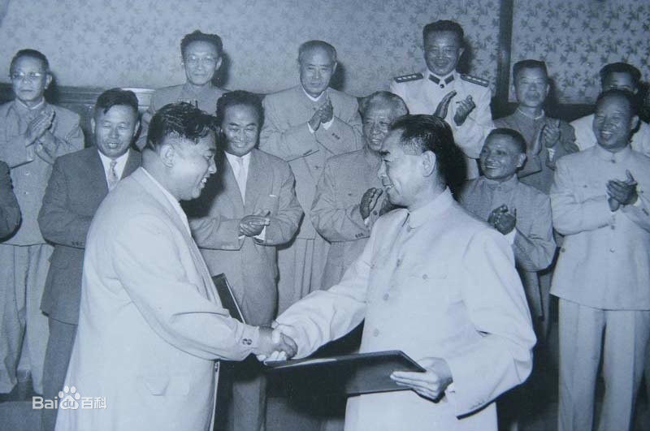
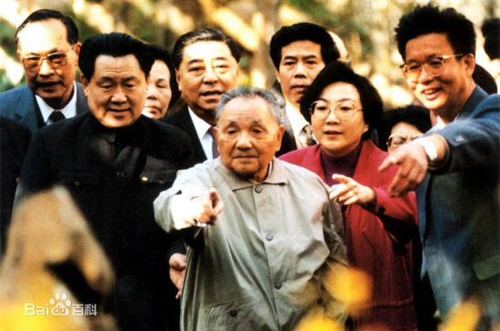

建国1949-2019 The founding of the People's Republic of China from 1949 to 2019
- 1949年10月1日下午3时，北京30万群众齐集天安门广场，举行隆重的开国大典。毛泽东主席在天安门城楼上向全世界庄严宣告："中华人民共和国中央人民政府今天成立了！”向世界宣告中华人民共和国成立。
- 1950年7月10日，“中国人民反对美国侵略台湾朝鲜运动委员会”成立，抗美援朝运动自此开始。10月，中国人民志愿军赴朝作战，拉开了抗美援朝战争的序幕。
- 经过许多斗争和工作，挫败了美英等阻挠谈判的阴谋。以阿沛・阿旺晋美为首的西藏地方政府代表团，终于在1951年4月下旬抵京谈判，并于5月23日签署了《中央人民政府和西藏地方政府关于和平解放西藏办法的协议》。1951年的5月23日，中央人民政府的全权代表和西藏地方政府的全权代表在北京签订《中央人民政府和西藏地方政府关于和平解放西藏办法的协议》（简称《十七条协议》），宣告了西藏的和平解放。
- 和平共处五项原则于1953年12月，中国政府同印度政府就两国在西藏地方的关系问题进行谈判，周恩来总理在会见印度代表团时第一次提出和平共处五项原则，即“互相尊重主权和领土完整，互不侵犯，互不干涉内政，平等互利，和平共处” 。这五项原则是在建立各国间正常关系及进行交流合作时应遵循的基本原则，得到中国、印度和缅甸政府共同倡导。和平共处五项原则是中国奉行独立自主和平外交政策的基础和完整体现，被世界上绝大多数国家接受，成为规范国际关系的重要准则。
- 第一部《中华人民共和国宪法》于1954年9月20日在第一届全国人民代表大会第一次会议上通过，共4章106条。被称为五四宪法。五四宪法是一部较为完善的宪法。这是中华人民共和国的第一部宪法，是在对建国前夕由全国政协制定的起临时宪法作用的《共同纲领》进行修改的基础上制定的。
- 1952年下半年至1956年，新中国仅仅用了4年时间，就完成了对农业、手工业和资本主义工商业的社会主义改造，实现了把生产资料私有制转变为社会主义公有制，使中国从新民主主义社会跨入了社会主义社会，我国初步建立起社会主义的基本制度。从此，中国进入社会主义的初级阶段。
- 1958年5月，中共八大二次会议，正式通过了“鼓足干劲、力争上游、多快好省地建设社会主义”的总路线。尽管这条总路线的出发点是要尽快地改变我国经济文化落后的状况，但由于忽视了客观经济规律，根本不可能迅速地改变我国经济文化落后的状况。
- 1960年1月，石油部党组召开扩大会议，准备加快松辽地区勘探和油田开发，2月20日，中共中央批准石油部提交的报告，石油会战由此开始。石油系统37个厂矿、院校组织了人员自带设备，国务院一些部门人员、退伍的解放军战士和转业军官，以及以铁人王进喜为代表的老一辈石油人组成的石油大军进入东北松嫩平原，展开了石油大会战。

- 7月11日――周恩来和金日成在北京签署《中朝友好合作互助条约》，这个条约的核心是军事互助。条约第二条规定：缔约双方保证共同采取一切措施，防止任何国家对缔约双方的任何一方的侵略。一旦缔约一方受到任何一个国家的或者几个国家联合的武装进攻，因而处于战争状态时，缔约另一方应立即尽其全力给予军事及其他援助。另外该条约第四条对中朝任何一方的独立自主都有一定的限制，要求双方协商与共同利益有关的一切重大国际问题。
- 1962年，中国人民解放军驻西藏、新疆边防部队在中印边境地区对侵入中国领土的印度军队进行的自卫反击作战，印度则称之为瓦弄之战（Battle of Walong）。
- 在中共中央统一领导下，经过一大批科技人员、干部和职工的共同努力，中国自行制造的第一颗原子弹于1964年10月16日在新疆罗布泊爆炸成功。
- 20 June. Mustafa Kemal promoted Adjutant-Major.
- September. Mustafa Kemal posted to Third Army at Salonika.
- 1969年3月，苏联军队几次对黑龙江省乌苏里江主航道中心线西部中国一侧的珍宝岛实施武装入侵，并向中国岸上纵深地区炮击。中国边防部队被迫进行自卫反击。
- 1971年10月25日，联合国大会第1976次会议以76票赞成、35票反对、17票弃权的压倒多数，通过了阿尔巴尼亚、阿尔及利亚等23个国家提出的要求“恢复中华人民共和国在联合国的一切合法权利，立即把蒋介石集团的代表从联合国一切机构中驱逐出去”的提案。

- Mustafa Kemal serves as Chief of Staff in suppression of revolt in Albania.
- Mustafa Kemal sent to Paris with military mission to attend French army manoeuvres.

- 1972年2月21日，美国总统尼克松抵达北京，受到周恩来总理等中国领导人的欢迎。2月28日，中美上海联合公报发表，宣布中美两国关系走向正常化。从此，中华人民共和国和美利坚合众国的关系进入了一个新的历史时期。

- 1977年8月，在中国共产党第十一次全国代表大会上，党中央正式宣布“文化大革命”结束。

- 1978年12月18日-22日，中国共产党第十一届中央委员会第三次全体会议在北京举行。出席会议的中央委员169人，候补中央委员112人。会议由时任中共中央主席华国锋主持。全会的中心议题是根据邓小平同志的指示讨论把全党的工作重点转移到经济建设上来。
- 1979年2~3月，中国人民解放军边防部队对在中越边境挑衅和入侵的越南军队进行的自卫还击作战 。越南在苏联的支持下，对中国采取敌对行为。中国采取自卫措施，在短时间内占领了越南北部20余个重要城市和县镇，一个月之内宣布撤出越南。
- 1983年，央视第一届春节晚会亮相。晚会没有专门的主持人，马季（已故）、姜昆、王景愚、刘晓庆成了首届春晚的当家。
- 1985年中华人民共和国政府和大不列颠及北爱尔兰联合王国政府关于香港问题的联合声明，宣布生效
- 1987年3月26日中葡两国政府草签关于澳门问题的联合声明。声明确认，中华人民共和国政府将于1999年12月20日对澳门恢复行使主权。4月13日，两国政府总理在北京正式签署这一联合声明。
- 1988年3月14日中国海军和越南海军在中国南沙群岛赤瓜礁海域发生的武装冲突，是中国海军的一场自卫还击战。
- 第11届亚运会于1990年9月22日-10月7日在中国北京举行。 这是中国举办的第一次综合性的国际体育大赛，来自亚奥理事会成员的37个国家和地区的体育代表团的6578人参加了这届亚运会。

- 1992年1月18日-2月21日，邓小平视察武昌、深圳、珠海、上海等地并发表重要谈话。为中国走上有中国特色社会主义市场经济发展道路奠定了思想基础。
- 1987年3月26日中葡两国政府草签关于澳门问题的联合声明。声明确认，中华人民共和国政府将于1999年12月20日对澳门恢复行使主权。4月13日，两国政府总理在北京正式签署这一联合声明。
- 1998年7月至9月――中国长江流域和淮河流域发生特大洪水，造成4150人死亡，经济损失达2551亿元人民币。
- 1999年，澳门回归。
- 2001年7月13日，国际奥委会主席萨马兰奇先生在莫斯科宣布：北京成为2008年奥运会主办城市。
- 神舟五号载人飞船是“神舟”号系列飞船中的第五艘，是中国首次发射的载人航天飞行器。它于2003年10月15日9时在酒泉卫星发射中心发射，将航天员杨利伟及一面具有特殊意义的中国国旗送入太空，2003年10月16日6时23分返回。
- 第29届夏季奥林匹克运动会（Games of the XXIX Olympiad），又称2008年北京奥运会，2008年8月8日晚上8时整在中华人民共和国首都北京举办。
- 中国2010年上海世界博览会（EXPO 2010），是第41届世界博览会。于2010年5月1日至10月31日期间，在中国上海市举行。
- 2013年秋天，习近平主席提出共建“一带一路 ”的合作倡议，旨在通过加强国际合作，对接彼此发展战略，实现优势互补，促进共同发展。联合国大会、安理会、联合国亚太经社会、亚太经合组织、亚欧会议、大湄公河次区域合作等有关决议或文件都纳入或体现了“一带一路”建设内容。“一带一路”倡议来自中国，成果正在惠及世界。

- 2015年9月3日，是中国第二个法定的“中国人民抗日战争胜利纪念日”，也是首个决定放假的抗战胜利纪念日。为隆重纪念中国人民抗日战争暨世界反法西斯战争胜利70周年，2015年3月国务院专门发布活动通知，活动的主题是“铭记历史、缅怀先烈、珍爱和平、开创未来”，并对纪念活动作出总体安排。
- 港珠澳大桥于2018年10月24日上午9时开通运营。
- 2019年10月1日是中华人民共和国成立70周年纪念日。